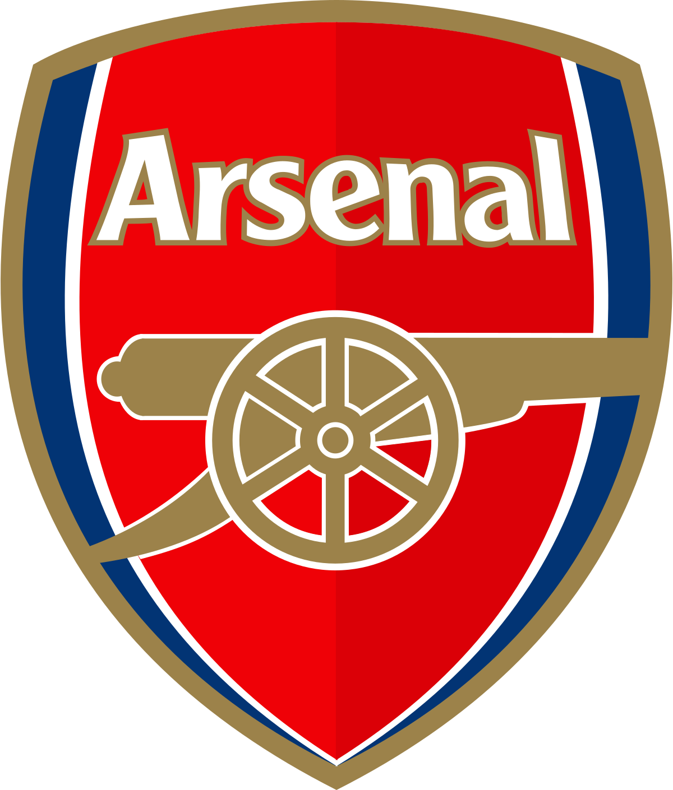

- Aantal Kampioenschappen: 20
- Aantal Punten Aller Tijden: 2335
- Win Percentage: 62%
- Gemiddeld Aantal Punten Per Wedstrijd: 2.07
- Punten in 2021/22: 27
- Positie op dit moment: 6
- Doelsaldo Aller Tijden: 1121

- Aantal Kampioenschappen: 19
- Aantal Punten Aller Tijden: 2058
- Win Percentage: 52%
- Gemiddeld Aantal Punten Per Wedstrijd: 1.82
- Punten in 2021/22: 41
- Positie op dit moment: 2
- Doelsaldo Aller Tijden: 841

- Aantal Kampioenschappen: 13
- Aantal Punten Aller Tijden: 2104
- Win Percentage: 54%
- Gemiddeld Aantal Punten Per Wedstrijd: 1.86
- Punten in 2021/22: 32
- Positie op dit moment: 4
- Doelsaldo Aller TijdenM: 860

- Aantal Kampioenschappen: 9
- Aantal Punten Aller Tijden: 1554
- Win Percentage: 36%
- Gemiddeld Aantal Punten Per Wedstrijd: 1.37
- Punten in 2021/22: 19
- Positie op dit moment: 14